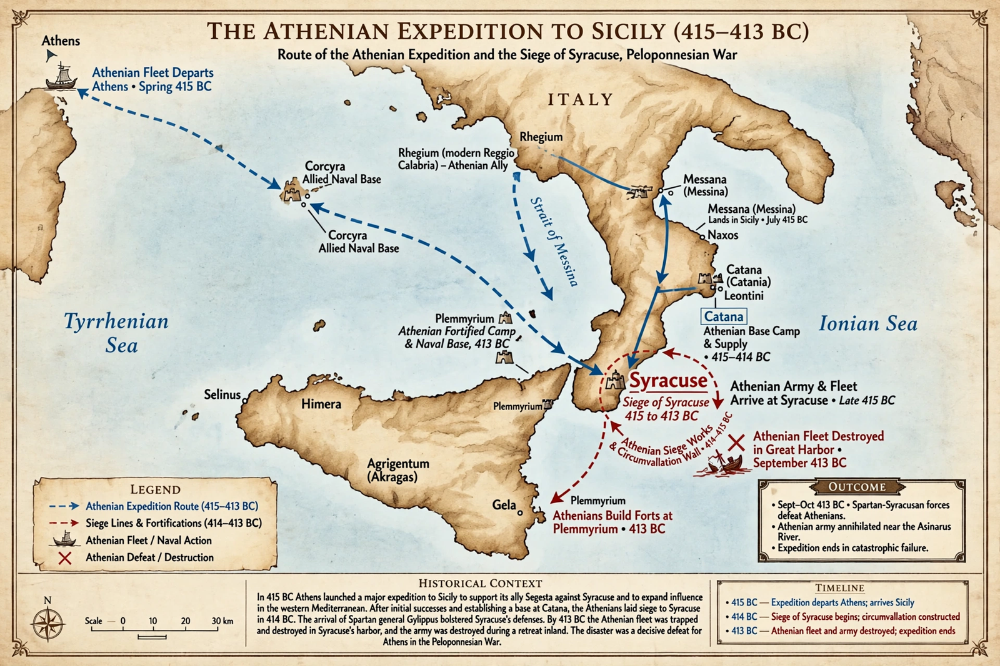

Sicilian Expedition

The Sicilian Expedition was an Athenian military expedition to Sicily, which took place from 415 to 413 BC during the Peloponnesian War between Athens on one side and Sparta, Syracuse and Corinth on the other. The expedition ended in a devastating defeat for the Athenian forces, severely impacting Athens.
Initially led by the Athenian generals Nicias, Alcibiades and Lamachus, the expedition's stated goal was to aid Athens' ally Segesta against Selinunte, a Sicilian city allied with Syracuse. In truth the expedition was an ambitious attempt to conquer the whole island, whose great wealth and grain supplies would strengthen Athens against Sparta.
Background
Alcibiades was the chief advocate of the expedition, hoping for personal glory and wealth. Nicias, appointed one of its commanders against his will, tried to dissuade the assembly by exaggerating the forces required — a tactic that backfired when the Athenians enthusiastically voted the larger armament. Shortly before the fleet sailed, the religious statues known as the hermai were mutilated in the night, a scandal in which Alcibiades was implicated; he was recalled to face trial soon after reaching Sicily and defected to Sparta.
The expedition
The Athenians landed in Sicily in 415 BC and won initial successes, including a victory outside Syracuse. Under Lamachus's urging they might have struck Syracuse directly, but after his death in 414 BC the cautious Nicias settled into a long siege. The arrival of the Spartan general Gylippus turned the tide: the Syracusan defences were completed, the Athenian fleet was trapped in the Great Harbour, and a relief force under Demosthenes also failed. A lunar eclipse on 27 August 413 BC persuaded the superstitious Nicias to delay the retreat, sealing the army's fate. The Athenians were destroyed in a final sea battle and in the rout that followed; Nicias and Demosthenes were executed, and thousands of prisoners died in the stone quarries of Syracuse.
Consequences
The disaster destroyed Athens' fleet and much of its manpower, encouraged revolts among its allies and subjects, and led Persia to fund the Spartan fleet. Athens recovered remarkably for a time, but the expedition is widely seen as the turning point of the war, which ended in Athens' surrender in 404 BC. Our principal source is Thucydides, whose account in Books 6 and 7 of his History is considered one of the masterpieces of historical writing.
See also: Peloponnesian War, Syracuse, Alcibiades.